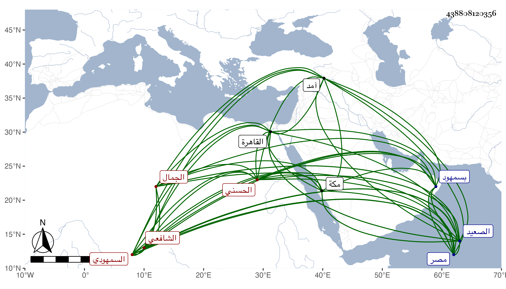

0902Sakhawi.DawLamic.ITO20230111-ara1.EIS1600.438808120356
Biography ID: 438808120356
14
عبد الله بن أحمد بن أبي الحسن علي بن عيسى بن محمد بن عيسى بن محمد بن عيسى الجمال الحسني السمهودي الشافعي الماضي أبوه والآتي ولده النور علي . ولد سنة أربع وثمانمائة بسمهود ونشأ بها فحفظ القرآن والمنهاج الفرعي وألفية ابن مالك وعرضها على جماعة وارتحل إلى مصر قبل استكمال العشرين فأخذ بها الفقه عن الميدومي والد زكي الدين وحضر مجلس أبي هريرة بن النقاش والبهاء بن القطان ثم قدم القاهرة في سنة ست وثلاثين فلازم دروس القاياتي بل قرأ عليه النكت لأبن النقيب بتمامها وأذن له في الإفتاء والتدريس وأخذ العربية عن المحلى قرأ عليه ابن عقيل ثم لازمه بأخرة فيها وفي الفقه وأصوله وغير ذلك وكان ينزل تحت بالمؤيدية وكذا أخذ عن الونائي وغيره ولقي بمكة إذ جاور بها بعض سنة أبا القسم النويري فأخذ عنه واجتمع هناك بالشهاب بن رسلان واستفتاه عن شيء يتعلق بالحج في أيامه فقال أخشى من انتشار الكلام وطول المباحثة فيكون جدالا ، وناب في قضاء بلده عن الجلال البلقيني فمن بعده ولم يتعد لغيرها من الأعمال التي كانت مع والده مع استنجاز شيخه الميدومي المرسوم له بذلك وقدم على القاضي فأعلمه بهذا فصار يقضي العجب من شاب يزهد في المنصب وكون غيره من الشيوخ يبذل الأموال فيه واتفق له مع القاياتي والمناوي نحو ذلك واعتذر بأنه لو سئل في القيامة عن نفسه لم يجد خلاصا فكيف بأهل إقليم واقتصر على بلده لتعينه عليه فيها فكان يقضي ويدرس ويفتي فلما كانت سنة ثمان وخمسين عزل نفسه محتجا بأنه لا يعلم ببلده مستكملا شروط العدالة مع أنه لا يسعه إلا قبوله ، هذا مع أن غالب قضاياه لم تكن إلا توقيفا وصلحا بحيث كان يقصد من أقاصي الصعيد فما دونها لذلك احتسابا بل يضيفهم ويقوم بكلفهم وحين أعرض عن ذلك استقر ولده الكبير عبد الرحمن عوضه ، ولزم صاحب الترجمة الإفتاء والتدريس والعبادة مع طريقته في الانجماع بمنزله وعدم البروز إلا للجماعة حتى كان لا يعرف سوق بلده مع صغرها بل اتفق أنه كان بجامع الصالح حين اجتياز الأشرف بعساكره متوجها لآمد فقام الجماعة كلهم لرؤيته وهو لم يتحرك من مكانه وهكذا كان دأبه لم يكن يصرف شيئا من أوقاته في غير عبادة مع الورع التام بحيث أن بعض بني عمر أمراء الصعيد تزوج بأخته بعد مراجعة ومحاورة ومراغمة فما تناول لهم شيئا ولا اختلط معهم في شيء حتى أنه أفرد ما جرت العادة بإرساله عند الخطبة إلى وقت الدخول فأرسل به إليهم ولم يزل على طريقته إلى أن مات بها شهيدا تحت هدم عقب صلاة المغرب وقراءته سورة الواقعة في سادس عشري صفر سنة ست وستين رحمهم الله . أفاده ولده بأطول من هذا .
